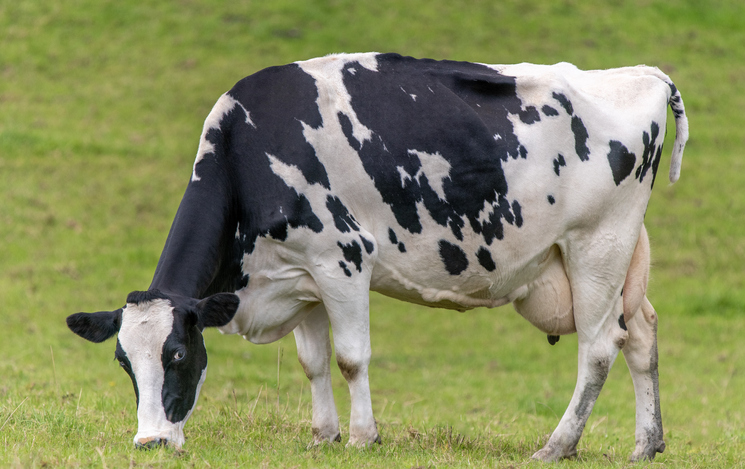

What are Zoonotic Diseases
zoonotic diseases
Zoonotic Diseases: Disease Transmitted from Animals to Humans. A zoonosis (zoonotic disease or zoonoses -plural) is an infectious disease that is transmitted between species from animals to humans (or from humans to animals).

Where did the first zoonotic diseases start?
Zoonotic diseases
The first epidemic, which was the Justinian Plague, began in the middle of the 6th century in the Byzantine Empire.
When did the first zoonotic outbreak start?
Zoonotic diseases
The first epidemic, which was the Justinian Plague, began in the middle of the 6th century in the Byzantine Empire. Over a 200-year period, it is thought that nearly 25 million people died of the plague.news about the environment
-
Plague-Nevaan
Plague is an infectious disease caused by the bacterium Yersinia pestis. Symptoms include fever, weakness and headache. Usually this begins one to seven days after exposure. There are three forms of plague, each affecting a different part of the body and causing associated symptoms.
-
Ebola-Heth

Ebola Virus Disease (EVD) is a rare and deadly disease in people and nonhuman primates. The viruses that cause EVD are located mainly in sub-Saharan Africa. People can get EVD through direct contact with an infected animal (bat or nonhuman primate) or a sick or dead person infected with Ebola virus.
-
Influenza-Genta
What is Influenza (Flu)? Flu is a contagious respiratory illness caused by influenza viruses that infect the nose, throat, and sometimes the lungs. It can cause mild to severe illness, and at times can lead to death. The best way to prevent flu is by getting a flu vaccine each year.
-
Anthrax-Ishaan
Anthrax is a serious infectious disease caused by gram-positive, rod-shaped bacteria known as Bacillus anthracis. It occurs naturally in soil and commonly affects domestic and wild animals around the world. People can get sick with anthrax if they come in contact with infected animals or contaminated animal products.
By:Heth, Nevaan, Genta and Ishaan